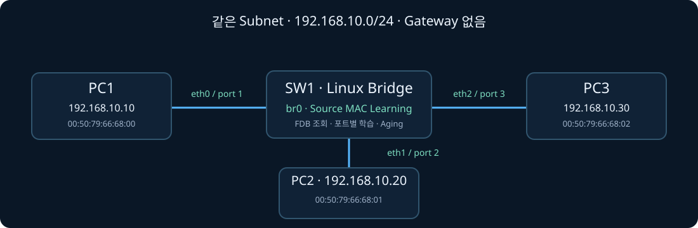

FOUNDATION · BEGINNER FIRST · VERIFIED LAB
Ethernet / MAC Table
이 Lab의 목표는 하나입니다.
스위치가 MAC 주소를 어떻게 배우고, 프레임을 어느 포트로 보낼지 어떻게 결정하는지 이해하는 것입니다.
구성·검증 완료
초급자 설명 우선
GNS3 · 실제 PCAP 근거
처음부터 PCAP이나 FDB 명령을 해석할 필요는 없습니다. 바로 아래 00 · 처음 읽기부터 보고, 그다음 실험은 “정말 그렇게 동작했는지 확인하는 증거”로 보면 됩니다.
00 · 처음 읽기 · BEGINNER FIRST
실험보다 먼저, 이것만 이해하세요.
처음에는 용어를 외우지 말고
스위치가 프레임 하나를 처리하는 순서만 따라가면 됩니다.
30초 요약 · 딱 두 문장
① Source MAC(출발지 MAC) = 스위치가 “이 장비가 어느 포트에 있는지” 학습할 때 봅니다.
② Destination MAC(목적지 MAC) = 스위치가 “이 프레임을 어느 포트로 내보낼지” 결정할 때 봅니다.
한 줄로 줄이면 출발지를 보고 학습하고, 목적지를 보고 전달합니다.
FRAME ANATOMY
스위치가 실제로 보는 Ethernet Frame
프레임의 앞부분만 보면 Learning과 Forwarding을 분리해서 이해할 수 있습니다.
Destination MAC
PC2 MAC
FDB 조회 → 출력 포트 결정
Source MAC
PC1 MAC
Learning → 수신 포트와 함께 기록
EtherType
IPv4 / ARP
상위 프로토콜 종류
Payload
IP · ARP 데이터
상위 계층 데이터
학습에 필요한 핵심은 Source MAC, 전달 판단에 필요한 핵심은 Destination MAC입니다. 이해를 위해 Preamble·FCS 등은 생략했습니다.
Source MAC을 봅니다.
PC1 프레임이 1번 포트로 들어왔다면 스위치는 PC1 MAC → 1번 포트라고 기억합니다.
Destination MAC을 조회합니다.
목적지가 PC2라면 MAC Table에서 PC2 MAC이 어느 포트인지 찾아봅니다.
다른 전달 포트를 알면 한 곳, 모르면 여러 곳
PC2 MAC이 수신 포트가 아닌 특정 전달 포트에 학습되어 있으면 그 포트로만 보냅니다. FDB에 없으면 동일 VLAN/Broadcast Domain의 다른 전달 가능 포트로 Flooding합니다.
가장 중요한 오개념: 스위치는 목적지 MAC을 배우려고 Flooding하는 것이 아닙니다.
Flooding은 목적지 MAC이 어느 포트에 있는지 모를 때 프레임을 여러 포트로 전달하는 동작입니다. 스위치가 PC2의 위치를 배우는 순간은 PC2가 보낸 프레임이 들어왔을 때입니다. 그때 Source MAC이 PC2이므로 PC2 MAC → 들어온 포트를 학습합니다.
Flooding은 목적지 MAC이 어느 포트에 있는지 모를 때 프레임을 여러 포트로 전달하는 동작입니다. 스위치가 PC2의 위치를 배우는 순간은 PC2가 보낸 프레임이 들어왔을 때입니다. 그때 Source MAC이 PC2이므로 PC2 MAC → 들어온 포트를 학습합니다.
KNOWN · UNKNOWN · BROADCAST
세 가지는 이렇게 구별하세요.
| 상황 | 목적지 MAC | 스위치 상태 | 동작 | 쉽게 말하면 |
|---|---|---|---|---|
| Known Unicast | PC2의 실제 MAC | PC2 MAC → 2번 포트를 알고 있음 | 2번 포트로만 전달 | “PC2가 어디 있는지 안다.” |
| Unknown Unicast | PC2의 실제 MAC | PC2가 어느 포트인지 모름 | 동일 VLAN/Broadcast Domain의 전달 가능한 포트 중 수신 포트를 제외하고 Flooding | “PC2에게 가는 건 맞는데 어느 문인지 모른다.” |
| Broadcast | ff:ff:ff:ff:ff:ff |
특정 한 장비의 포트를 찾는 상황이 아님 | 동일 VLAN/Broadcast Domain의 전달 가능한 포트 중 수신 포트를 제외하고 전달 | “처음부터 같은 LAN 모두에게 보내는 주소다.” |
Unknown Unicast ≠ Broadcast입니다. 둘 다 여러 포트로 나갈 수 있지만, Unknown Unicast의 Destination MAC은 여전히 PC2의 실제 MAC입니다. Broadcast만 ff:ff:ff:ff:ff:ff입니다.
FIRST PING · FULL FLOW
처음 Ping할 때 실제로는 어떤 순서일까요?
PC1과 PC2가 같은 서브넷이고
ARP Cache와 MAC Table이 비어 있다고 가정합니다.
PC1이 PC2의 MAC을 모릅니다.
PC1은 먼저 ARP Request로 “192.168.10.20의 MAC 주소가 뭐야?”라고 묻습니다.
ARP Request가 Switch에 들어옵니다.
Source MAC은 PC1입니다. 스위치는 먼저 PC1 MAC → 들어온 포트를 학습합니다. ARP Request는 Broadcast이므로 다른 포트에도 전달합니다.
PC2가 ARP Reply를 보냅니다.
이번에는 Source MAC이 PC2입니다. 스위치는 PC2 MAC → 들어온 포트를 학습합니다.
이제 Ping은 Known Unicast가 됩니다.
PC1은 PC2의 MAC을 알고, 스위치는 PC2의 포트를 압니다. 따라서 ICMP Echo Request는 PC2 포트로만 전달됩니다.
INTERACTIVE TIMELINE · FIRST PING
FDB와 ARP Cache가 변하는 순간을 순서대로 보세요.
ARP Cache와 FDB가 비어 있습니다.
PC1은 PC2의 MAC 주소를 모르고, SW1도 PC1·PC2의 위치를 아직 학습하지 않은 상태에서 시작합니다.
아직 전송된 프레임 없음
192.168.10.20의 MAC을 아직 모름
PC1·PC2가 어느 포트인지 아직 모름
프레임이 들어오면 Source 학습 후 Destination을 판단
핵심 관찰: ARP는 PC의 IP → MAC 정보가 채워지는 과정이고, 동시에 스위치는 오가는 프레임의 Source MAC → Port를 학습합니다. 두 표는 서로 다른 장비가 서로 다른 목적으로 유지합니다.
ARP TABLE vs MAC TABLE
PC가 아는 정보와 Switch가 아는 정보는 다릅니다.
| 표 | 주로 누가 보유? | 기억하는 관계 | 쉬운 질문 |
|---|---|---|---|
| ARP Cache / ARP Table | PC, Router 등 | IP → MAC | “192.168.10.20의 MAC이 뭐지?” |
| MAC Table / FDB | Switch / Bridge | MAC → Port | “이 MAC은 어느 포트 쪽에 있지?” |
실무 정확도 · VLAN도 함께 생각하기: 실무에서는 MAC 주소만 단독으로 보지 않고 VLAN/Forwarding Domain의 문맥과 함께 확인해야 합니다. 많은 Enterprise Switch는 MAC Table 출력에서 VLAN·MAC·Port를 함께 보여주며, 내부 FDB 구조와 학습 범위는 장비 구현에 따라 달라질 수 있습니다. 이 Lab은 단일 Broadcast Domain만 사용하므로 초급 설명에서는 MAC → Port로 단순화했습니다.
그래서 ARP에는 있는데 MAC Table에는 없을 수도 있습니다.
PC1이 PC2의 MAC 주소를 알아도, 스위치가 PC2가 어느 포트에 있는지 모를 수 있습니다. 아래 04번 Unknown Unicast 실험이 바로 이 상태를 일부러 만든 것입니다.
용어가 헷갈리면 여기만 펼쳐보세요
MAC Table = FDB(Forwarding Database) · 이 페이지에서는 같은 의미로 봐도 됩니다.
Learning · 들어온 프레임의 Source MAC과 수신 포트를 기록하는 것.
Forwarding · Destination MAC을 보고 적절한 출력 포트로 프레임을 보내는 것.
Flooding · 출력 포트를 하나로 정할 수 없거나 Broadcast일 때 동일 VLAN/Broadcast Domain에서 전달 가능한 여러 포트로 프레임을 보내는 것.
Aging · 일정 시간 동안 갱신되지 않은 동적 MAC Table 항목을 지우는 것.
여기까지 읽었다면 아래부터는 새 개념이라기보다 위 설명이 실제로 맞는지 GNS3·FDB·PCAP으로 확인하는 구간입니다. 한 번에 전부 이해할 필요 없습니다.
01 · 그림으로 확인
세 PC, 하나의 Broadcast Domain
VPCS 3대 · Linux Bridge 1대
Gateway·NAT·외부 네트워크 연결 없음.
보는 순서: 받은 프레임의 Source/Destination MAC → MAC Table 상태 → 스위치의 출력 결정.
이 Lab의 범위: 단일 VLAN/Broadcast Domain · 모든 링크 Forwarding 상태 · Port Isolation 없음 · Unknown-Unicast 차단/억제 없음 · Gateway/NAT 없음. 실제 네트워크에서는 VLAN, STP 상태, 보안 기능 등에 따라 Flooding 가능한 포트 범위가 달라질 수 있습니다.
이 동작 그림이 모델링하지 않는 항목
VLAN/Trunk 구성 변경, STP Blocking/Topology Change, Port-Security·MAC 제한, Static MAC, Unknown-Unicast Suppression, 링크 장애, 실시간 FDB Aging 상태 전이는 이 그림에서 시뮬레이션하지 않습니다.
06번 Aging은 별도의 실제 Linux Bridge 실험 결과로 검증했으며, 아래 동작 그림 자체가 Aging 타이머를 재현하는 것은 아닙니다.
PREDICT BEFORE CHECKING
먼저 예상해보세요 · PC3 링크에서도 보일까요?
PC1의 ARP Cache에는 PC2 MAC이 남아 있지만, SW1의 FDB에서 PC2 MAC 항목만 삭제했습니다. 이 상태에서 PC1이 PC2로 Unicast를 보내면 PC3 연결 링크에서도 그 프레임이 관찰될까요?
목적지 MAC: PC2
출발지 MAC: PC1 · PC2행 ICMP 요청
PC2 MAC → 2번 포트
수신한 출발지 PC1 MAC → 1번 포트 학습·갱신
2번 포트로만 전달
목적지 MAC은 PC2 그대로
INGRESS
PC1
프레임을 SW1으로 전송
SW1 · FDB LOOKUP
PC2 MAC → 2번 포트
Source MAC 학습 후 Destination MAC 조회
PC2 링크
전달
PC3 링크
전달하지 않음
모바일에서는 위 흐름을 먼저 보고, 아래 상세 토폴로지는 필요할 때 좌우로 확인하세요.

PC3 링크: 이 요청을 전달하지 않음
PC1 → PC2 통신 · 근거 실험 02
Unknown Unicast 이후를 한 단계씩 보기
Known Unicast · PC2 포트로만 전달
PC1 → SW1 eth0 / port 1 수신 → eth1 / port 2 송신. 목적지 MAC: 00:50:79:66:68:01.
PC2 전달 패킷 확인 → PC3 미전달 비교 →갈색 점선은 현재 선택한 프레임의 이동 방향을 뜻하며 ARP/ICMP 같은 프로토콜 종류를 색으로 구분한 것이 아닙니다. 실제 PCAP에 근거한 설명 그림이며 실시간 애니메이션은 아닙니다.
FDB · BEFORE / AFTER
실제로 Source MAC이 학습되는 순간
| 관찰 시점 | MAC Table 상태 | 뜻 |
|---|---|---|
| ① 초기화 직후 | PC 동적 엔트리 없음 | 아직 PC 위치를 모름 |
| ② PC1 ARP Request 수신 | PC1 MAC → port 1 | PC1이 보낸 프레임을 받아 PC1 위치 학습 |
| ③ PC2 ARP Reply 수신 | PC1 MAC → port 1PC2 MAC → port 2 | PC2가 보낸 응답을 받아 PC2 위치도 학습 |
핵심: PC2를 찾기 위해 Flooding했다고 PC2 위치를 자동으로 배우는 것이 아닙니다. PC2가 응답을 보내고 그 프레임이 들어와야 PC2의 Source MAC과 수신 포트를 학습합니다.
02 · 실제 실험
이제 설명이 실제로 맞는지 확인합니다.
처음에는 번호 · 확인 목적 · 결과만 보세요.
명령과 PCAP은 필요할 때 펼쳐보면 됩니다.
| 번호 | 무엇을 확인? | 쉽게 말하면 | 실제 결과 | 근거 |
|---|---|---|---|---|
| 01 | Source MAC Learning | 스위치는 누구의 MAC을 보고 배우나? | PC1 프레임을 받자 PC1→port1 학습. PC2 응답을 받은 뒤 PC2→port2 추가. ✓ PASS | FDB·콘솔 ↗ |
| 02 | Known Unicast | PC2 위치를 알고 있으면? | PC2 포트로만 요청 전달. PC3 링크에는 요청 0개. ✓ PASS | PC3 PCAP ↗ |
| 03 | Broadcast | ARP Request처럼 처음부터 모두에게 보내면? | 목적지 MAC ff:ff:ff:ff:ff:ff인 ARP Request가 PC2·PC3 링크에 전달.✓ PASS | Broadcast PCAP ↗ |
| 04 | Unknown Unicast | PC1은 PC2 MAC을 아는데 스위치만 PC2 포트를 모르면? | 목적지 MAC은 PC2 그대로지만 PC2와 PC3 포트 모두로 Flooding. ✓ PASS | PC3의 Unicast PCAP ↗ |
| 05 | MAC Re-learning | PC2가 응답하면 다시 배울까? | PC2 응답의 Source MAC으로 PC2→port2 재학습. 다음 요청은 PC3로 가지 않음. ✓ PASS | 재학습 기록 ↗ |
| 06 | Aging | 오래 통신하지 않으면 MAC Table은? | 실험용 Aging 시간을 5초로 낮추자 동적 MAC 엔트리가 시간 경과 후 사라짐. ✓ PASS | Aging 콘솔 ↗ |
03 · 제일 중요한 비교
Known과 Unknown은 목적지 MAC이 같습니다.
PC2 위치를 알고 있음
- 목적지 MAC
- PC2 실제 MAC
- SW1 FDB
- PC2 MAC → port 2 있음
- 결과
- PC2 포트로만 전달
- PC3
- 요청 0개
PC2 위치를 모름
- 목적지 MAC
- PC2 실제 MAC · 그대로
- SW1 FDB
- PC2 MAC 없음
- 결과
- PC2·PC3 포트로 Flooding
- PC3
- PC2 목적지 Unicast가 보임
Unknown은 “목적지 MAC을 모른다”는 뜻이 아닙니다. 정확히는 스위치의 FDB에 그 목적지 MAC이 어느 포트에 있는지 정보가 없다는 뜻입니다.
04 · ARP와 FDB 분리
ARP가 남아 있어도 Switch는 모를 수 있습니다.
PC1이 알고 있는 정보
“192.168.10.20은 PC2 MAC을 사용한다.” 그래서 새 ARP 없이 PC2 목적지 Unicast 프레임을 만들 수 있습니다.
Switch가 알고 있는 정보
“PC2 MAC은 2번 포트에 있다.” 이 정보가 없으면 목적지 프레임을 어느 한 포트로 보낼지 결정할 수 없습니다.
ARP만 남기고 FDB를 삭제
PC1은 PC2 MAC을 알고 있지만 SW1은 PC2 포트를 모르는 상태를 만들어 Unknown Unicast Flooding을 직접 확인했습니다.
06 · 이해 확인
이 네 문장을 자신의 말로 설명할 수 있으면 됩니다.
1. Switch는 어느 MAC을 보고 학습하나요?
답 확인
Source MAC입니다. 그리고 그 프레임이 들어온 포트를 함께 기록합니다.
2. Destination MAC을 FDB에서 못 찾으면?
답 확인
동일 VLAN/Broadcast Domain에서 전달 가능한 포트 중 수신 포트를 제외하고 Unknown Unicast Flooding합니다.
3. Unknown Unicast와 Broadcast는 같은가요?
답 확인
아닙니다. Unknown Unicast의 목적지 MAC은 특정 장비의 실제 MAC이고, Broadcast는 ff:ff:ff:ff:ff:ff입니다.
4. ARP Table과 MAC Table의 차이는?
답 확인
ARP는 IP → MAC, Switch MAC Table/FDB는 MAC → Port를 기억합니다.
이 네 가지가 아직 헷갈리면 아래 주제로 넘어가지 않아도 됩니다. 이 페이지의 목표는 용어 암기가 아니라 프레임이 왜 그 포트로 이동하는지 설명할 수 있게 되는 것입니다.
NEXT · OPTIONAL
기본 흐름이 이해됐다면 실무 확장으로 넘어가세요.
MAC Move·Flapping, 운영 판단 문제, Aruba/Cisco CLI 흐름, 원본 검증 자료는 고급 모드에서 확인할 수 있습니다.
PRACTICAL EXTENSION · NEXT STEP
실무에서 MAC Table을 보면 여기까지 연결됩니다.
기초 Learning을 이해한 뒤 자주 마주치는
MAC Move · Flapping · Trunk/Uplink을 연결합니다.
같은 MAC이 다른 포트에서 들어오면?
VLAN 10 · AA:AA → port 2
↓ 새 프레임의 Source MAC이 port 5에서 관찰
VLAN 10 · AA:AA → port 5
스위치는 일반적으로 같은 VLAN에서 해당 Source MAC을 새 포트에서 학습하면 FDB의 위치를 새 포트로 갱신합니다. 단말 이동, AP 로밍 뒤 유선 경로 변화, 토폴로지 변경 등 정상 상황에서도 발생할 수 있습니다.
같은 MAC의 위치가 계속 왕복한다면?
port 2↔port 5↔port 2
짧은 시간에 같은 VLAN·MAC 엔트리가 여러 포트 사이를 반복 이동하면 흔히 MAC Flapping이라고 부릅니다. L2 Loop, 잘못된 이중 연결, 가상화·Bonding 구성, 무선/유선 브리지 구조 등 여러 원인이 가능하므로 로그와 토폴로지를 함께 확인해야 합니다.
한 포트에 MAC이 수십·수백 개 보이는 이유
PC APC BAP Clients
→ Access Switch →
Uplink / Trunk port
스위치는 프레임이 실제로 들어온 포트에 Source MAC을 학습합니다. 따라서 하위 스위치나 AP가 연결된 Uplink/Trunk에서는 그 뒤에 있는 여러 단말의 Source MAC이 같은 물리 포트 방향으로 학습되는 것이 정상입니다.
| MAC Table에서 본 현상 | 먼저 생각할 것 | 바로 장애인가? |
|---|---|---|
| MAC이 한 번 다른 포트로 이동 | 단말/경로가 실제 이동했는지 확인 | 아니요. 정상 MAC Move일 수 있음 |
| 같은 MAC이 포트 사이에서 반복 이동 | Loop·이중 연결·Bonding·Bridge 구조와 로그 확인 | 원인 분석 필요 |
| Uplink 한 포트에 MAC 다수 | 그 포트 뒤에 Switch/AP/Hypervisor 등이 있는지 확인 | 대개 정상적인 집선 결과 |
운영 관점: MAC Table은 단순 주소 목록이 아니라 “이 Source MAC이 어느 L2 경로에서 관찰되고 있는가”를 보여주는 상태 정보입니다. 장애 분석에서는 VLAN, 포트 역할, STP 상태, 연결 토폴로지, 시간에 따른 MAC 이동을 함께 봐야 합니다.
OPERATOR DRILLS · TROUBLESHOOTING
MAC Table을 보고 먼저 무엇을 판단해야 할까요?
정답보다 중요한 것은 근거 없이 단정하지 않는 것입니다.
각 상황에서 가장 먼저 할 판단을 골라보세요.
진행 현황
0 / 5
정답
0 / 5
01
MAC FLAPPING
같은 MAC이 두 포트를 계속 왕복합니다.
VLAN 20 · AA:AA:AA:AA:AA:01 → port 12
2초 후 → port 18
1초 후 → port 12
다시 → port 18
이 정보만 보고 가장 적절한 1차 판단은?
해설: 짧은 시간에 동일 VLAN의 같은 MAC이 포트 사이를 반복 이동하면 MAC Flapping으로 볼 수 있습니다. 하지만 원인은 L2 Loop뿐 아니라 이중 연결, NIC Teaming/Bonding, 가상화 Bridge, 특수한 무선·유선 구조 등도 가능합니다.
다음 확인: port 12/18의 LLDP·연결 장비, STP 상태/Topology Change, 인터페이스 로그, MAC Move 로그, 해당 단말의 이중 연결 여부.
02
UPLINK / TRUNK
한 포트에 MAC 주소가 200개 보입니다.
port 48 · trunk/uplink
learned dynamic MACs: 200+
downstream: access switch
가장 적절한 판단은?
해설: 스위치는 Source MAC이 들어온 방향을 학습합니다. 하위 Access Switch, AP, Hypervisor 같은 집선 장비가 뒤에 있다면 많은 단말 MAC이 하나의 Uplink 방향으로 보이는 것은 자연스럽습니다.
다음 확인: 해당 포트의 역할(Access/Trunk/Uplink), LLDP Neighbor, 허용 VLAN, 하위 장비 종류, 평소 MAC 개수와 급격한 증감 여부.
03
ARP EXISTS · FDB MISSING
PC는 목적지 MAC을 아는데 Switch에는 없습니다.
PC1 ARP: 192.168.10.20 → PC2 MAC
SW1 FDB: PC2 MAC 없음
PC1 → PC2 Unicast 전송 시작
첫 Unicast Frame을 받은 SW1의 동작은?
해설: PC의 ARP Cache와 스위치의 FDB는 별개입니다. PC1은 이미 PC2 MAC을 알고 있으므로 Unicast Frame을 만듭니다. SW1은 그 Destination MAC의 출력 포트를 모르기 때문에 MAC을 변경하지 않고 Flooding합니다.
다음 확인: PC2가 응답하면 Source MAC으로 다시 학습되는지, 이후 동일 통신이 Known Unicast로 바뀌는지 확인.
04
AGING
통신이 한동안 없었던 뒤 FDB 엔트리만 사라졌습니다.
PC1 ARP Cache: PC2 항목 유지
SW1 FDB: PC2 dynamic entry aged out
PC1이 다시 PC2로 패킷 전송
가장 가능성 높은 첫 L2 동작은?
해설: 동적 FDB Aging은 스위치가 MAC → Port 위치 정보를 잊는 동작입니다. PC의 ARP Cache가 아직 남아 있다면 새 ARP 없이 목적지 MAC을 그대로 사용한 Unicast가 생성될 수 있고, 스위치는 그 MAC의 포트를 모르면 Flooding합니다.
다음 확인: 실제 FDB Aging Timer, ARP Cache 유효 상태, 대상의 응답 여부, 응답 후 FDB 재학습 여부.
05
VLAN + MAC
같은 MAC이 서로 다른 VLAN에서 보입니다.
VLAN 10 · BB:BB:BB:BB:BB:01 → port 5
VLAN 20 · BB:BB:BB:BB:BB:01 → port 24
MAC Table 관점에서 먼저 기억해야 할 것은?
해설: 실무에서는 단순한 전역 MAC → Port가 아니라 VLAN(Forwarding Domain) + MAC → Port의 문맥이 중요합니다. 장비 구현과 네트워크 설계에 따라 같은 MAC이 서로 다른 VLAN에서 관찰되는 상황이 있을 수 있으므로 VLAN을 빼고 바로 중복 장애로 단정하면 안 됩니다.
다음 확인: 각 VLAN의 목적과 경로, 해당 MAC을 사용하는 장비/가상 인터페이스, Trunk 허용 VLAN, 예상된 설계인지 여부.
REVIEW
5문항을 모두 확인했습니다.
실무 판단 원칙: MAC Table은 강력한 단서지만 단독으로 원인을 확정하는 자료는 아닙니다. VLAN + Port 역할 + 시간 변화 + STP/인터페이스 로그 + 실제 연결 토폴로지를 함께 확인해야 오판을 줄일 수 있습니다.
CLI WORKFLOW · EVIDENCE FIRST
MAC Table에서 시작해 어디까지 확인해야 할까요?
명령어 암기가 아니라
증거를 좁혀가는 순서를 연습합니다.
학습용 상황
“단말 MAC이 port 12와 port 18 사이를 반복 이동한다.”
바로 Loop라고 결론내리지 않고, 아래 순서대로 MAC → Port → VLAN → Neighbor → STP → Log/Error → 종합 판단을 확인합니다.
STEP 1 · MAC LOCATION
먼저 MAC이 현재 어느 포트에서 학습되는지 확인합니다.
VLAN과 포트를 함께 보고 시간에 따라 위치가 바뀌는지 확인합니다.
한 번의 이동인지 반복 이동인지 구분합니다.
ARUBA AOS-SWITCH · 예시
show mac-address
출력에서 대상 MAC의 VLAN과 Port를 확인합니다. 필요하면 장비 버전에 맞는 필터를 추가합니다.
학습용 예시 출력
MAC Address Port VLAN AA:AA:AA:AA:AA:01 12 20 잠시 후 다시 확인: AA:AA:AA:AA:AA:01 18 20
같은 VLAN의 동일 MAC 위치가 시간에 따라 바뀌고 있다는 사실입니다.
“L2 Loop가 확실하다”고 단정할 단계는 아닙니다.
port 12와 18의 상태와 역할을 확인합니다.
MAC현재 위치·이동 여부
→
PORTLink·Error·역할
→
VLAN같은 Forwarding Domain
→
LLDP연결 대상
→
STPRole·State·변화
→
LOG시간 상관관계
→
DECIDE근거 기반 조치
명령어 참고 기준
Aruba AOS-Switch: 2930F/3810M 계열에서 사용하는 AOS-Switch 16.x 계열 명령 흐름을 기준으로 작성했습니다. show mac-address, show interfaces brief, show vlan ports <PORT> detail, show lldp info remote-device, show spanning-tree, show logging 등을 사용합니다.
Cisco IOS XE: show mac address-table, show interfaces, show lldp neighbors detail, show spanning-tree, show logging 계열을 예시로 사용합니다.
주의: 명령 구문과 지원 옵션은 모델·소프트웨어 릴리스마다 다를 수 있으므로 실제 장비에서는 ?와 해당 버전 Command Guide로 최종 확인하세요.
운영 핵심: 장애분석은 명령을 많이 치는 것이 아니라 현재 가설을 검증하기 위해 다음에 어떤 증거가 필요한지 결정하는 과정입니다. MAC Table은 출발점이고, 조치는 포트/VLAN/Neighbor/STP/로그의 증거가 서로 일치할 때 결정하는 편이 안전합니다.
05 · ORIGINAL EVIDENCE
이해한 뒤 필요하면 원본까지 확인하세요.
설명을 믿는 데서 끝내지 않고
실제 콘솔·FDB·PCAP으로 다시 확인할 수 있습니다.
전체 실험 보고서
초기 상태, 조건 변경, 결과, 검증 한계를 정리한 상세 보고서입니다.
전체 보고서 읽기 ↗Lab 프로젝트 백업
동일한 토폴로지를 다시 열어 직접 재현할 수 있는 프로젝트입니다.
프로젝트 다운로드 ↓PCAP 15개와 검증 자료
5개 패킷 실험 × 3개 캡처 지점의 원본 PCAP과 판정 자료입니다.
전체 자료 ZIP ↓VALIDATION MAP
무엇을 어떤 실험으로 검증했는가?
| 핵심 개념 | 실험 | 검증 근거 |
|---|---|---|
| Source MAC Learning | 01 | PC1만 학습 → PC2 응답 후 PC2 추가 ↗ |
| Known Unicast | 02 | PC3 요청 0개 ↗ |
| Broadcast | 03 | ARP Request가 PC2·PC3에 전달 ↗ |
| Unknown Unicast | 04 | PC2 목적지 Unicast가 PC3 링크에도 존재 ↗ |
| MAC Re-learning | 05 | PC2 재학습 후 Flooding 종료 ↗ |
| Aging | 06 | 동적 엔트리 시간 경과 소멸 ↗ |